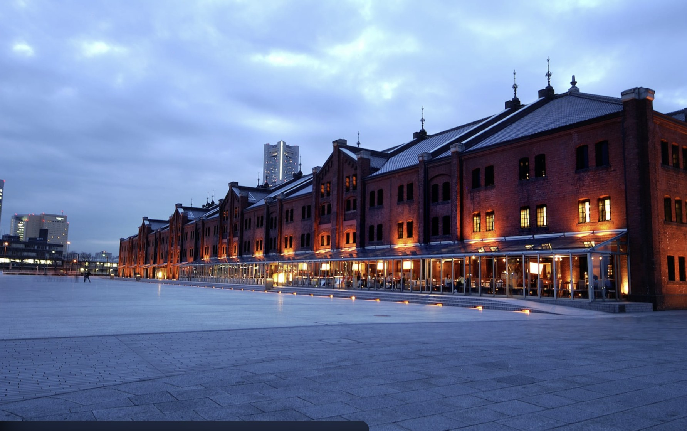
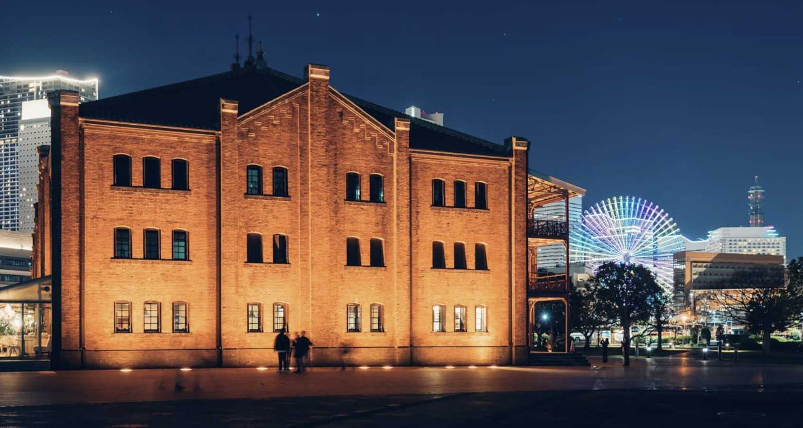
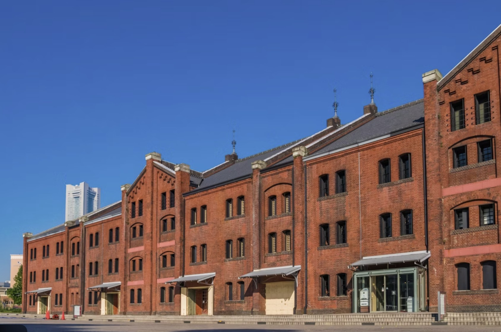
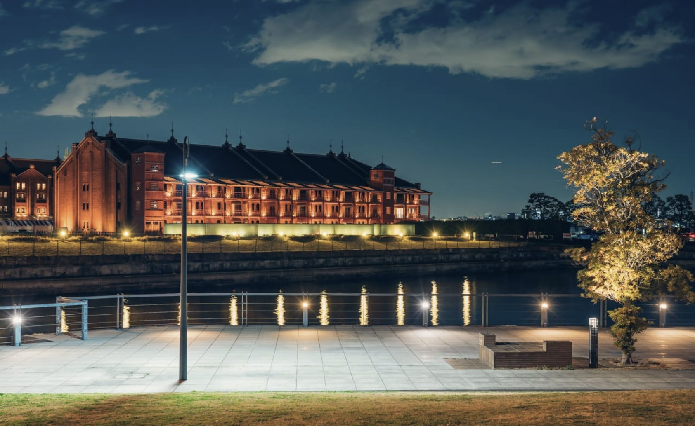

위치 / 접근
가나가와현 요코하마시 나카구 미나토미라이 인근, ‘바샤미치역’ 또는 ‘미나토미라이역’에서 도보 약 5~10분 거리. 항구와 쇼핑, 미술관이 인접해 있어 하루 일정으로 함께 둘러보기 좋다.
운영 / 요금 / 시즌 정보
- 상점가 영업시간: 11:00~20:00 (카페·레스토랑은 ~22:00)
- 입장료 없음, 자유 관람 가능
- 연말엔 독일풍 크리스마스 마켓, 겨울엔 아이스링크 이벤트 개최
- 봄·가을엔 야외 플리마켓과 공연이 열려 계절마다 분위기 변화
무엇을 볼 수 있나 / 체험
1900년대 초 세관 창고로 지어진 건물을 리노베이션하여, 벽돌 외관과 철제 기둥이 어우러진 독특한 건축미를 간직하고 있다. 내부에는 다양한 상점, 브런치 카페, 디자인 편집샵, 라이브홀 등이 있으며 항구의 불빛과 함께 사진 명소로도 손꼽힌다. 낮에는 활기찬 쇼핑 거리, 밤에는 따뜻한 조명 속 낭만적인 분위기를 즐길 수 있다.
먹거리 / 주변 시설
내부에는 수제 맥주 펍, 디저트 카페, 일본·서양식 레스토랑이 다양하게 있다. 특히 ‘요코하마 비어브루어리’의 수제 맥주와 ‘브릭카페’의 디저트가 인기. 근처에는 ‘마린앤워크 요코하마’나 ‘코스모월드’가 도보권에 있어 산책하며 카페와 항구 뷰를 함께 즐길 수 있다.
추천 일정 & 여행 스타일
- 오후: 창고 내부 구경 → 카페 휴식 → 항구 산책
- 저녁: 해질녘 조명 감상 → 레스토랑 저녁 → 사진 촬영
- 여행 스타일: 커플, 사진가, 감성 여행자에게 추천
문화 / 역사 / 배경
1911~1913년 사이 세관 창고로 건설되었으며, 관동대지진과 전쟁을 견디고 남은 항구의 역사적 건축물이다. 2002년 리노베이션을 거쳐 문화·예술·쇼핑이 결합된 복합공간으로 재탄생했다. 과거와 현재가 공존하는 요코하마의 상징적인 장소로 평가된다.
⚠ 여행 팁
- 주말·축제 시즌엔 인파가 많아 식당 대기 발생 가능
- 겨울엔 바닷바람이 강하므로 겉옷 필수
- 야간 조명 타이밍은 일몰 후 약 30분~1시간 사이가 가장 아름다움
- 인스타그램 명소: 1번관 앞 벤치, 항구 조명 반사 포인트